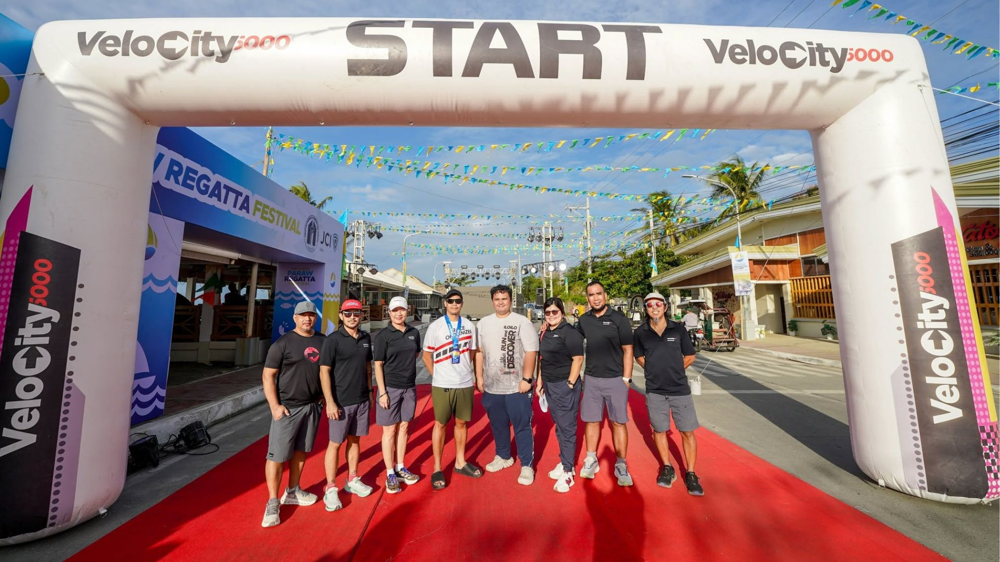

01
Running
Road races that bring runners together and create memorable experiences from start to finish.

VELOCITY 5000 · SPORTS & EVENTS
Creating experiences. Building community.
01 — WHERE IT STARTED
Velocity 5000 was established in 2023, beginning with a group of paddlers from the Iloilo Paddlers Club.
What started with a shared passion for paddling grew into something bigger — a commitment to creating sporting experiences that bring people together.
Today, Velocity 5000 organizes sporting events across different disciplines, from road running and multisport to watersports.
02 — WHAT WE DO
From the road to the river, Velocity 5000 creates sporting experiences across multiple disciplines.
Road races that bring runners together and create memorable experiences from start to finish.
Aquathlon, duathlon and other multisport experiences that challenge athletes across different disciplines.
Sporting events on the water that celebrate teamwork, competition and paddling.
Bringing athletes, volunteers, partners and communities together through sport.
03 — OUR REACH
Velocity 5000 has organized sporting events in communities across Western Visayas, including Iloilo, Capiz and Antique.
Running · Multisport · Watersports
Running Events
Running Events
THE FLAGSHIP
ILOILO
Every year, Velocity 5000 brings runners together in Iloilo City for the Iloilo Dinagyang Marathon — its flagship road-running event.
Explore Heritage Run 405 — OUR EVENTS
Our flagship annual road-running event.
Races organized across Iloilo, Capiz and Antique.
Swim and run in a multisport experience inspired by Iloilo's watersports culture.
Run, bike and run in a test of endurance across three disciplines.
A celebration of paddling, teamwork and competition on the Iloilo River.
06 — OUR APPROACH
Creating opportunities for people to move, challenge themselves and discover what they can achieve.
Building events that participants remember long after they cross the finish line.
Bringing people together through shared experiences, competition and sport.
Working alongside athletes, volunteers, partners and communities to bring every event to life.
VELOCITY 5000
We kept moving.